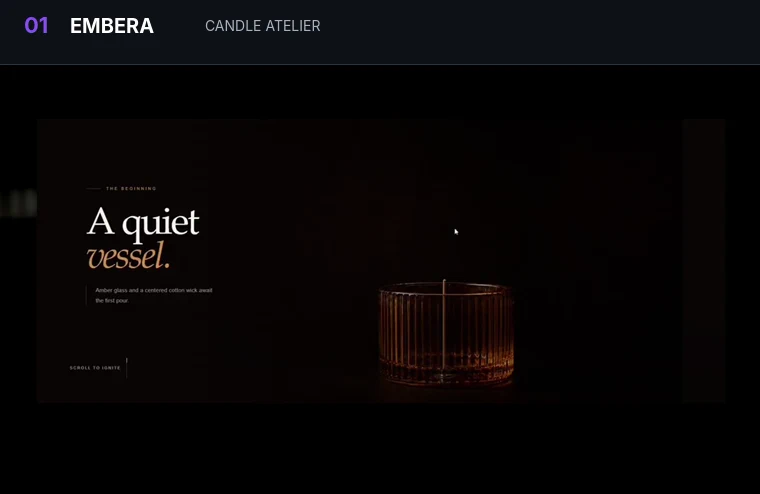
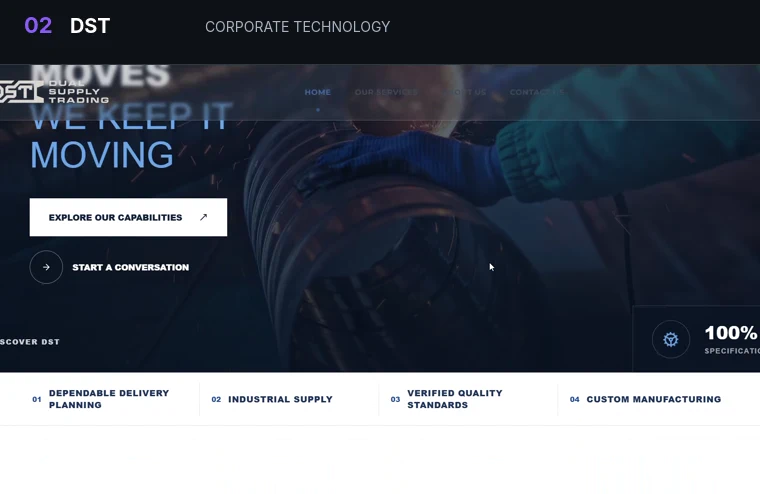
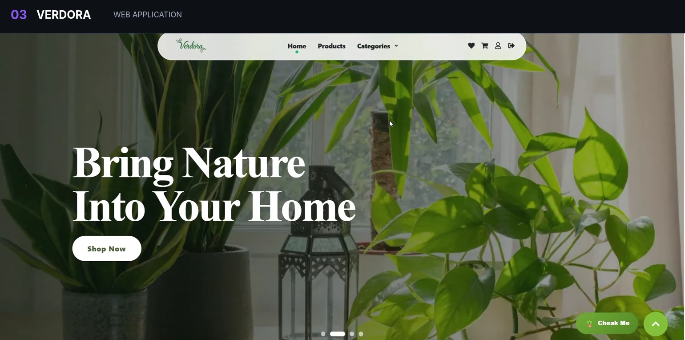

01 / LIVE
EMBERA
Lifestyle / Digital Experience
- Built with
- React · JavaScript
- Highlights
- Strong visual presentation, smooth responsive behavior, product-focused UI
TOKA / DEV
Building clean interfaces, responsive experiences, and polished digital products for Web × Mobile.
1const profile = {
2 role: "Frontend & Cross-Platform Developer"
,
3 focus: ["Responsive UI"
, "Reusable Components"
, "API Integration"
],
4 stack: ["React"
, "React Native"
, "TypeScript"
, "Next.js"
],
5 status: "Open to opportunities"
6};I turn ideas into responsive and maintainable digital products with strong attention to UI quality, usability, and frontend architecture.

01 / LIVE
Lifestyle / Digital Experience

02 / LIVE
Corporate / Production Website

03 / LIVE
Modern Web Application
Frontend
HTMLCSSJavaScriptTypeScriptReactNext.jsMobile & Data
React NativeExpoRedux ToolkitTanStack QueryAxiosUI & Integration
TailwindBootstrapSassMaterial UIFirebaseREST APIsWorkflow
GitGitHubVitePostmanFigmaVercelCross-Platform Development Track · Graduate
React · React Native · APIs · Application Architecture · Git · Team CollaborationFront-End Development Diploma
HTML · CSS · JavaScript · Bootstrap · React · Responsive Design · REST APIs · Git